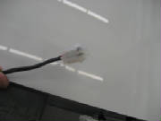

|
Space
The first thing you need is space to keep it and build it. As you can see from the delivery photos, it
fits into my two-car garage, which measures about 23-ft by 23-ft. The wing panels are slightly under 28 ft long
and just reach from corner to corner, with enough room to squeeze by on one end. In my case, sharing the same garage
with my Cozy project, some tools and a few other things leaves little room to actually work on the Pipistrel, but you don't
need a lot more room than that occupied by the plane itself.
Fortunately, my wife went along with the
idea of leaving our cars in the driveway. I even talked her into moving the Pipistrel into our downstairs family
room, but I then discovered that it wouldn't fit between a couple of structural posts, so it remains consigned
to the garage. I have the kit components unpacked and laid out in the family room and my basement workshop, where
they were arranged for the FAA kit evaluation, and where they are easier to locate when I need something.
Shop Heating
For the steps that require working with epoxy, you will need
to get the epoxy, the shop and the kit components all up to 70 degrees F or higher, and keep it there until the epoxy cures.
I have a kerosene heater in my garage that does the job, but I don't like leaving it unattended for any length of time.
Don't think about trying to use epoxy at lower temperatures, and don't let the temperature drop before the epoxy cures.
If you do, the chemical reaction is interrupted and it is not likely to start again when you raise the temperature.
After several years of working on my all-composite Cozy, I feel somewhat qualified to speak on the subject. During
the time I was actively working on that project, I kept my shop at 70 degrees all the time.
Applying paint is not
so temperature sensitive, but I still like to heat the shop for any painting.
For everything else, which
is cutting, sanding, drilling, and mechanical assembly, I don't bother adding heat, but we have relatively mild temperatures
here in the Seattle area. It's mainly determined by what you can tolerate and still have fun with the
build process.
Tools
You won't need much in the way of tools, but I'll list
here the things necessary, including where to get them if they are something you won't find at Lowe's or Home Depot.
Buy a decent organic vapor mask at Lowe's or Home Depot, and use it any time you are painting or working with
epoxy. If you don't, liver damage and violent allergic reactions are inevitable. The damage is subtle, but
cumulative and irreversible. You will feel fine until suddenly one day you get a violent physical or skin reaction at
the slightest contact with the offending substance. Once that happens, you are stuck with it for life. You also
want to keep expoxy away from your skin. Disposable latex or nitrile gloves are the minimum, but I prefer the heavier
butyl gloves (available from Wicks Aircraft). With the butyl gloves you wear a cotton liner to absorb perspiration,
and use disposable latex gloves over the butyl gloves to make the more expensive butyl ones last longer. Trust me on
the respirator and the gloves, and don't try to get by without either. The Pipistrel project won't generate
the kind of exposure that you would get from a Cozy or LongEZ, but it's just not worth the risk. The absence of
odor from epoxy, by the way, is not a reason to avoid wearing a mask. Gaseous components still exist, and those gases
are absorbed directly into your blood stream when you inhale them. My own theory is that lung exposure is more
serious that skin exposure. This comes from personal knowledge of two different people who were seemingly insensitive
to the plant poison ivy until they ingested the smoke of burning ivy. The people and the incidents were separates times
and places, but the results were the same. After breathing the smoke, both people were thereafter hypersensive to poison
ivy, developing severe allergic reactions on all subsequent contact.
You'll need a variable speed drill
-- cordless electric works fine.
A set of metric drill bits: Mine had to be ordered on-line, not finding
anything locally. A good source is McMaster-Carr http://www.mcmaster.com/. You will need some longer drill bits, which I found using their nice search capability. Unforunately, I somehow
didn't look at McMaster-Carr when I first needed a long 5mm drill bit and went with another solution. Next time
I'll know.
Metric thread taps: Ditto -- same source as the metric drill bits.
A metric step drill -- very useful for quickly enlarging holes to the desired size. For instance, I recommend drilling mounting holes first
to the size of the mounting bolt, then enlarging them where NutSerts are to be installed. When drilling a hole in the
composite cockpit shell, the first hole goes fine with a normal bit. Then if you try to enlarge it with an ordinary
drill bit, the flutes tend to grab at the edge of the hole and pull the drill into the hole, walk away from the original hole
center, or both. The step drill does a better job of this, giving you nicely concentric hole enlargements with much
better control over the tendency to grab the composite material. I orderd mine on line from http://mytoolstore.com/.
Metric Wrenches - Standard open end, ratchet sockets and Allen.
I find wrenches like this, with one end articulated, very useful.
Look for something with a fine ratchet, in any case.
Allen wrenches come with either straight ends or ball ends.
The ball end variety, shown here, is essential for working where you can't get a straight shot at the head of the bolt.
You will run into this often.
NutSert tool: NutSerts, also called RivetNuts or Rivnuts, are used to attach a permanent threaded nut to thin material. They can be installed from the same side of the material
as the bolt, so they work when you don't have access to the back side of the material. The NutSerts are installed
with a special tool, of which there are a few different varieties. The two-handle version shown in the photos in the
kit builders manual are fairly pricey. I found a couple that are not too expensive and are suitable for the non-production,
low volume home shop. The NutSert installation tools are fairly common, but the metric thread size adapters require
a little searching. One is available at http://www.rivetnuttool.com/. The picture shows a tool I bought locally at Tacoma Screw here in the Seattle area for about $60 that works like a heavy duty pop rivet tool. It was available with metric thread
adapters and works fine.
Angle Drill Attachment: Here's a very handy tool that I find indispensible for the inevitable need to drill holes in tight quarters.
You chuck one end into your cordless drill and screw special drill bits into the other end. The angle drill and bits
are available from Aircraft Spruce, Wicks, and pretty much any other aircraft supply house. The first picture shows
the angle drill and one of the special bits that screws into the angled end.
This photo shows a special small-diameter chuck that screws
into the angle drill. I can accept bits from about 1 mm up to 7 mm. I'm not sure of the source. I bought
this one from a vendor at the Arlington EAA fly-in last summer. As you can see on the fuselage construction page,
I used it to allow me to match-drill the rudder pedal assembly to the forward cockpit mounting pad.
This photo shows a drill bit inserted into the chuck.
For making straight cuts in composite materials, I find that a vibrating tool like the Fein Multimaster is far superior to a Dremel rotary disk cutter. You will definitely need to buy a special high speed steel blade, which will be expensive, but it will last forever. The cheap carbon steel blades will wear out in seconds when you
use them to cut composites. With this tool, however, you can make thin, precisely controlled cuts quite rapidly.
The vibrating action also avoids generating a lot of dust, rather than the clouds of material strewn about by a rotating cutter.
Another advantage is that you can touch the vibrating blade while it's cutting, without injuring yourself. The small amplitude,
high-frequency vibrations will just jiggle a soft material like your skin, but cut right through a rigid material. A
similar tool is used to cut bone during surgery, because it will cut the bone without damaging the surrounding soft body parts.
The Fein Multimaster is an expensive tool that has not had real competition until recently.
There are now less expensive options available from Dremel, Bosch and others. I highly recommend getting one of these tools. You'll find it handy for other things, like cutting
drywall for electrical outlets, trimming wood in tight spaces, etc. I bought my Fein tool twelve years ago and use it
frequently.
You will need to swage the loops in the ends of the rudder cables.
I used a simple, inexpensive swaging tool shown here, available from Aircraft Spruce and other aircraft suppliers. It is too slow to use for a high-volume operation,
but for a few cables on a typical homebuilt, it works just fine.
For attaching the electrical pins that are inserted into the connectors provided in the kit, you will
need a special crimper. The pins are a molex-type, stamped from sheet metal. The molex crimper has wedge-shaped
fingers with the valleys between the fingers shaped so that they cause the tabs on the pins to curve back and grab the conductor,
with a second set of tabs to grab the insulator. After the pins are crimped onto the wires, they can be slid into the
molded nylon connector housing, where they snap in place. I used a molex crimper part number 63811-1000, which I ordered
from Jameco Electronics. It's also generally advised to use heat shrink tubing to provide strain
relief. For the small wires from the wingtip lights, I used the 1.4 mm conductor position, and the 2.8 mm insulator
position.

Materials
As I indicated before, this is a very complete kit.
So far, all I have needed to buy are consumable items,
such as masking tape. Actually after I first wrote this, I discovered that I had overlooked the masking tape that was
included in the kit!
Paint brushes: For the limited amount of paint application required in the cockpit
interior, I prefer to buy cheap brushes and throw them away at the end of a session. They shed a few bristles, but not
enough to be a real pain. You can get them at Home Depot, I think. I ordered them in quantity for my Cozy
project from Aircraft Spruce or Wicks under their composite construction supplies.
Paint masking:
The kit manual talks about masking with sheet plastic that has masking tape already in place on one edge, referring to a auto
supply store as a good source. I didn't find anything like that at the local auto parts store, but I did find something
at Home Depot in the paint section. It's a 3M product called 3M Painters' Masking Tape Pre-Taped Drop Cloth that
comes in a roll about eight inches long, and unfolds to six feet wide as you unroll it. I'd never seen it before,
but it works great. I prefer to mask first with a good quality electrical tape, which conforms to fairly tight compound
curves for a nice, crisp edge. The electrical tape seals well so that the paint doesn't bleed beneath it, and it
comes off cleanly even weeks later. I then attach the masking sheet to the electrical tape without having
to worry too much about folds and wrinkles.
Loctite Thread Locker: So far, I've found the following types
of Loctite thread locker specified in the kit manual -- 262 (permanent, medium to high strength), 542 (for fine threads and
hydraulic or pneumatic joints; used for fuel fittings), 460 (a type of instant glue), 243 (medium strength, oil resistant).
I was able to buy all these at Amazon.com
Software
Builder's Log -- To satisfy the inspector when you certify your
aircraft, you will need a decent builder's log with lots of pictures and a credible record of what you did, when you did
it, and how long it took. A paper log, written by hand, is completely adequate, but I like the KitLog Pro software
package. See http://www.kitlog.com/
|